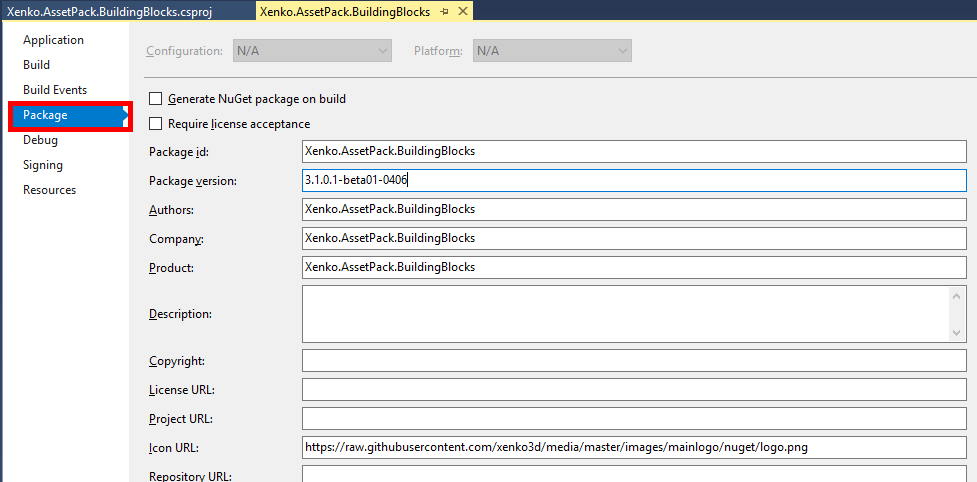
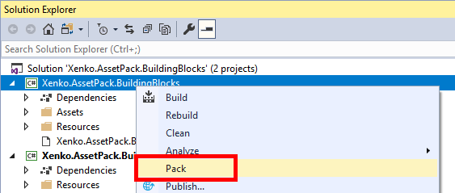

Create packages
Warning
Приносим свои извинения за неудобства. Для этой страницы нет перевода на русский язык. Она будет отображаться на английском языке.
Intermediate Programmer
Open your project in Visual Studio
First of all, after saving all your changes, open your project with Visual Studio. You can easily do this by clicking the appropriate button on the toolbar:

A few things to look out for:
- Delete unecessary assets (i.e. GameSettings, etc...)
- Delete unecessary
PackageReference
Optional: Setup Package properties
In the Solution Explorer, right-click on the project and click on Properties.
Go to the Package tab and edit Package version, description, URL, etc.

Pack
In the Solution Explorer, right-click on the project and click on Pack.

Visual Studio will build and pack the project. The resulting
.nupkgshould be inbin\Debugorbin\Releasefolder, depending on your configuration.
Publish
You can now publish the .nupkg file on a NuGet repository such as nuget.org.
There is several ways to do that: nuget.exe client, dotnet.exe client or nuget.org Upload Package
For additional information, please reference to Publishing packages in NuGet documentation.
Once your package is properly listed, it can now be consumed by other Stride users!